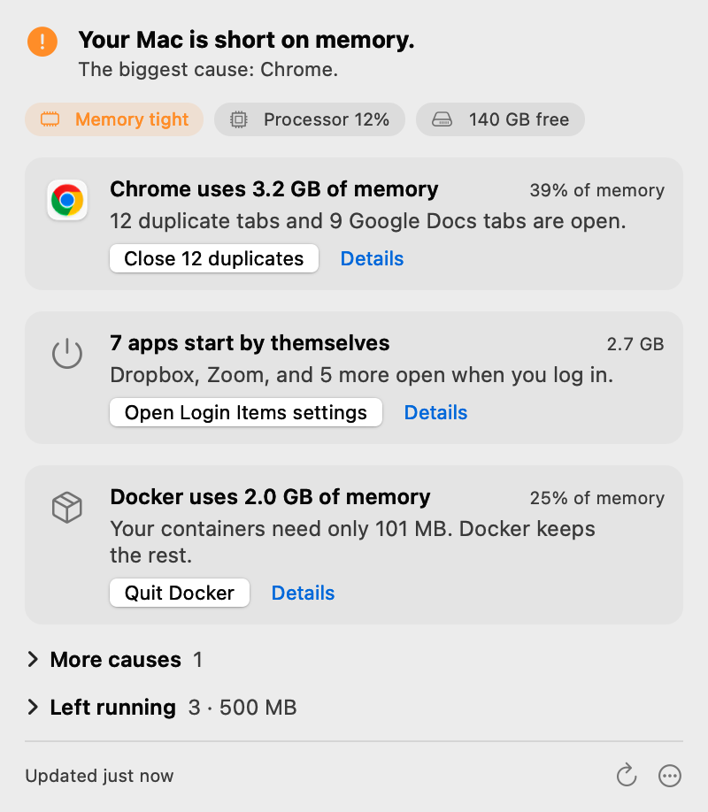

Sluggish › Help
Why is my Mac so slow?
Most slow Macs have one of five causes. You can find yours in about a minute with Activity Monitor, which is already on your Mac. Then fix it with the steps on the matching page.

Or let Sluggish check for you
Click the gauge in your menu bar. Sluggish names the cause in one plain line and gives you one safe fix.
- No cleaner, no subscription
- Nothing leaves your Mac
- 10 free checks, then $12 once
To install, open the zip file, drag Sluggish to Applications, and open it. A gauge appears in your menu bar. Apple notarized the app. If Chrome says “Suspicious download blocked”, open Chrome's download list and choose to download it anyway. Chrome says this about new apps that few people have downloaded.
Find the cause in one minute
- Open Activity Monitor: press Command-Space, type “Activity Monitor”, and press Return.
- Click CPU, then click the % CPU column so that the biggest number is at the top. An app that stays near the top keeps your processor busy.
- Click Memory and look at the Memory Pressure graph at the bottom. Green is fine. Yellow or red means that your Mac is short on memory.
- Check your free space: choose Apple menu › System Settings › General › Storage.
The five common causes
- Your Mac is too hotmacOS slows the processor to protect the hardware. You often see kernel_task at the top of Activity Monitor.
- Your browser uses too much memoryEvery tab needs its own memory. Duplicate tabs and web apps add up fast.
- Your disk is almost fullmacOS needs free space to work. With little left, apps freeze and you see the spinning wheel.
- Too many apps start by themselvesApps that open at login use memory all day, even when you never open them.
- Photos, iCloud or Spotlight is busyAfter an update or a new Mac, this background work can take hours. It stops by itself.
What does not help
- Cleaner apps that delete caches. macOS builds the caches again, and a cache usually makes your Mac faster, not slower. macOS also removes the caches that are safe to remove when space runs low.
- Apps that “free up RAM”. macOS fills free memory on purpose, so the number goes back up in minutes. Close the app or the tabs that use the memory instead.
- Reinstalling macOS before you know the cause. It takes hours, and the slow app or the full disk is still there afterwards.
Let Sluggish do the check
Click the gauge in your menu bar. Sluggish names the cause in one plain line and gives you one safe fix. Nothing runs until you click.
Download Sluggish10 free checks, then $12 once. macOS 14 or later, Apple silicon and Intel.
To install, open the zip file, drag Sluggish to Applications, and open it. A gauge appears in your menu bar. Apple notarized the app. If Chrome says “Suspicious download blocked”, open Chrome's download list and choose to download it anyway. Chrome says this about new apps that few people have downloaded.